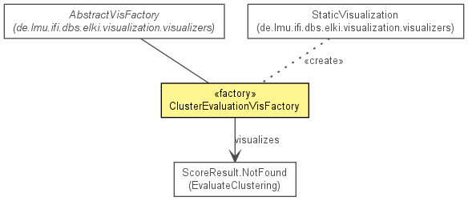

de.lmu.ifi.dbs.elki.visualization.visualizers.visunproj
Class ClusterEvaluationVisFactory
java.lang.Object
 de.lmu.ifi.dbs.elki.visualization.visualizers.AbstractVisFactory
de.lmu.ifi.dbs.elki.visualization.visualizers.visunproj.ClusterEvaluationVisFactory
de.lmu.ifi.dbs.elki.visualization.visualizers.AbstractVisFactory
de.lmu.ifi.dbs.elki.visualization.visualizers.visunproj.ClusterEvaluationVisFactory
- All Implemented Interfaces:
- ResultProcessor, InspectionUtilFrequentlyScanned, Parameterizable, VisFactory
public class ClusterEvaluationVisFactory
- extends AbstractVisFactory

Pseudo-Visualizer, that lists the cluster evaluation results found.
|
Field Summary |
private static String |
NAME
Name for this visualizer. |
| Methods inherited from class java.lang.Object |
clone, equals, finalize, getClass, hashCode, notify, notifyAll, toString, wait, wait, wait |
NAME
private static final String NAME
- Name for this visualizer.
- See Also:
- Constant Field Values
ClusterEvaluationVisFactory
public ClusterEvaluationVisFactory()
- Constructor.
processNewResult
public void processNewResult(HierarchicalResult baseResult,
Result newResult)
- Description copied from interface:
VisFactory
- Add visualizers for the given result (tree) to the context.
- Parameters:
baseResult - Context to work withnewResult - Result to process
makeVisualization
public Visualization makeVisualization(VisualizationTask task)
- Description copied from interface:
VisFactory
- Produce a visualization instance for the given task
- Specified by:
makeVisualization in interface VisFactory- Specified by:
makeVisualization in class AbstractVisFactory
- Parameters:
task - Visualization task
- Returns:
- Visualization
allowThumbnails
public boolean allowThumbnails(VisualizationTask task)
- Description copied from class:
AbstractVisFactory
- Test whether to do a thumbnail or a full rendering.
Override this with "false" to disable thumbnails!
- Overrides:
allowThumbnails in class AbstractVisFactory
- Parameters:
task - Task requested